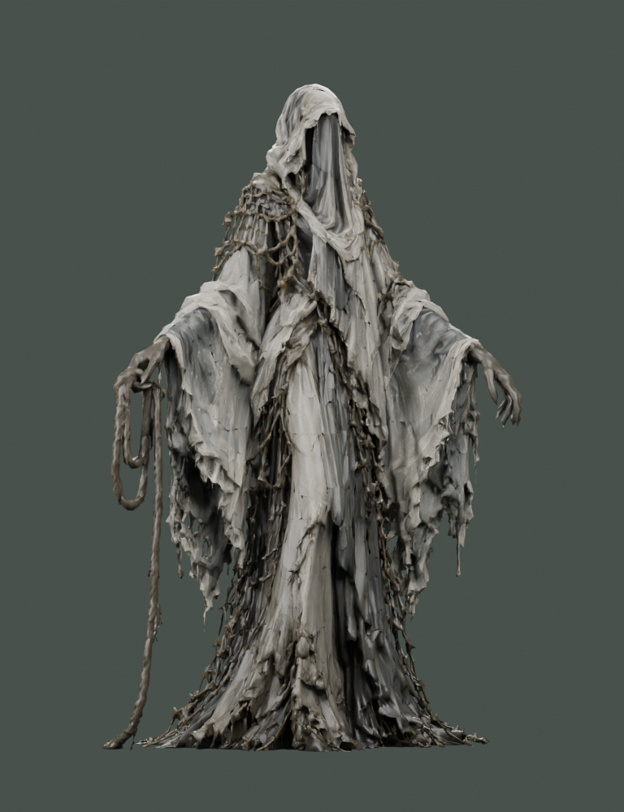
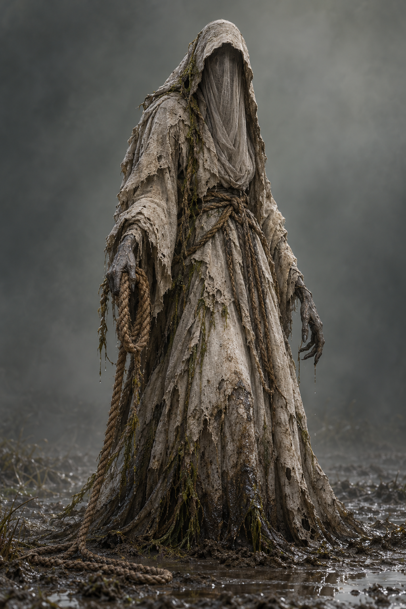
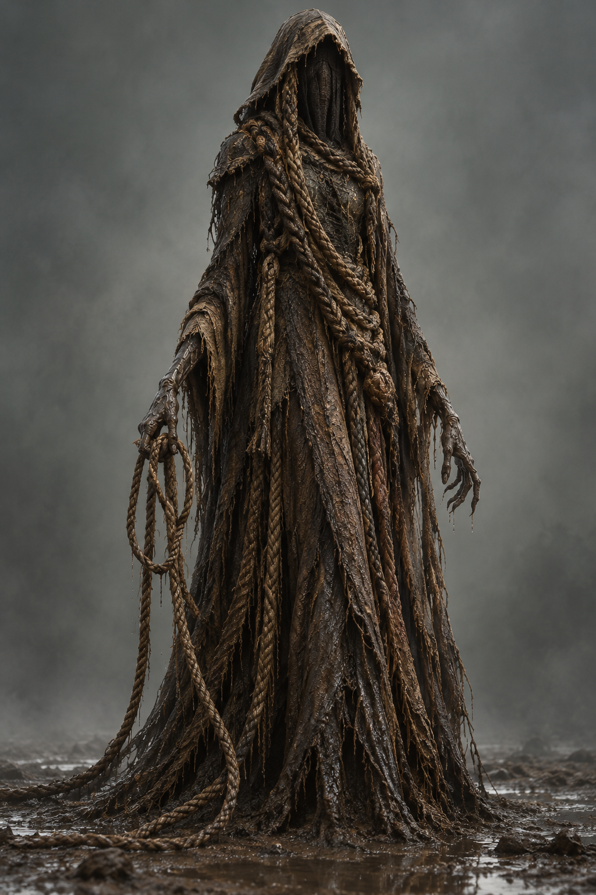
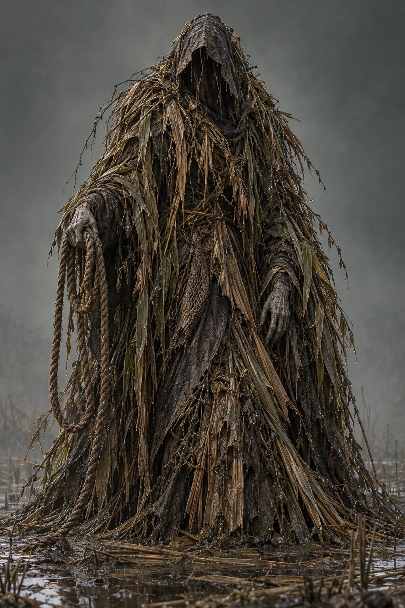
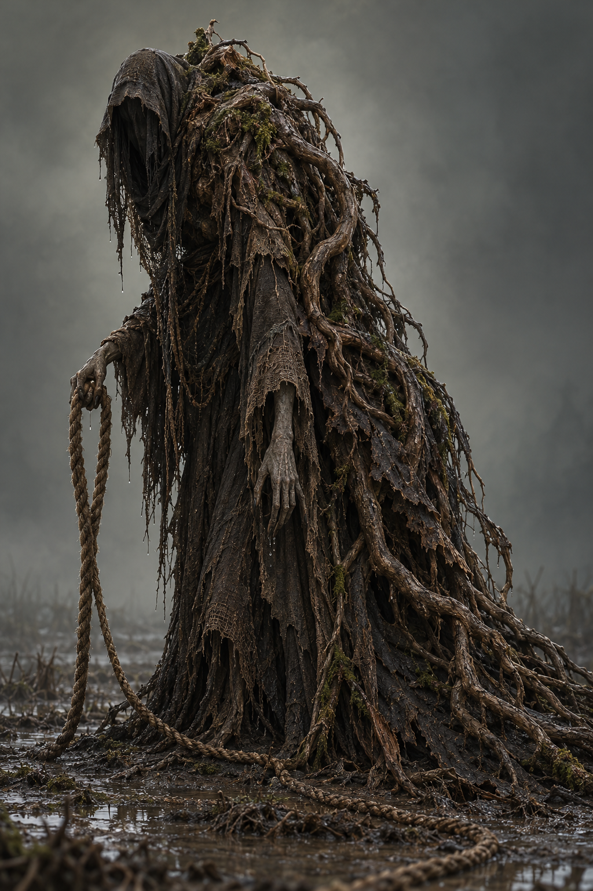
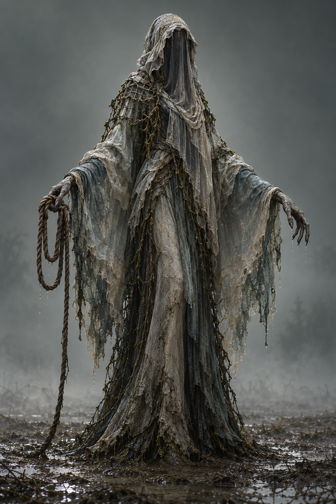

La Borda · Cinque direzioni
Cinque concept a figura intera con resa realistica ispirata a Unreal Engine. Clicca un’immagine per osservarla a piena risoluzione; da tastiera usa Tab e Invio.
24/10/2026 [GPT] · Proposte visive da scegliere con Roberto. Volto nascosto per la forma degli avvistamenti. Nomi di lavorazione, senza nuove origini narrative.
Scelta di Roberto: 5 · Il Velo della Foschia. Modello Meshy 7.1 generato: 30 crediti. Riferimento statico salvato e riaperto nella Master per C3 e D1; Play da Roberto. Apri anche lo studio sul riassetto del percorso.
Il riferimento 3D scelto
La proposta 5 è stata trasformata con Meshy 7.1 in un modello statico PBR. Originali GLB e FBX conservati; una copia locale da 99.999 triangoli è stata inserita nei due avvistamenti, nelle stesse posizioni delle sagome precedenti.

Anteprima renderizzata in Blender, non cattura di Unreal. Altezza corrente nella Master 3,00 m, come il miniboss, senza collisione; proporzioni e resa finale da valutare in Play. Nessuna animazione o apparizione condizionata implementata.
30 crediti effettivi · saldo Meshy 818. L’alleggerimento locale non ha speso altri crediti. Dati e ricevute.
File del modello e fonte
Proxy usato nella Master:
D:\Where the Fog Dies-ClaudeCoWork\Where the Fog Dies-ClaudeCoWork\Sviluppo\Greybox\Borda_Concept\Modello\Borda_Velo_Foschia_Greybox.glb
Originali Meshy nella stessa cartella: Borda_Velo_Foschia.glb e Borda_Velo_Foschia.fbx. Materiali e texture conservati. Il proxy è un riferimento greybox; retopologia, rig e animazioni produttive non sono certificati.


1 · Il Sudario
Figura raccolta, lino pallido appesantito dall’acqua e corda ben visibile.


2 · La Filatrice di Canapa
Molto alta e sottile, con mantello di fibre e trecce di canapa.


3 · Il Canneto Errante
Sagoma larga e triangolare, fatta di canne spezzate e strati vegetali.


4 · La Radice Cava
Corpo asimmetrico e piegato, corteccia scura e radici intrecciate al tessuto.


5 · Il Velo della Foschia — scelta approvata
Sagoma slanciata e aperta, con veli grigio-verdi stratificati e braccia lunghe.